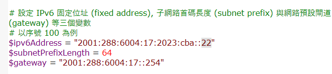

part 3 <<
Previous Next >> work
set wifi
2001:288:6004:17::3 為本系ipv6DNS位址
在本課程教室電腦，原本就設有ipv4和ipv6，在一般使用狀態下是沒有問題的。
但當過多人使用時，懂得如何變通 換條路來走很重要。
電腦教室過多人在上網時，許多人都怪網路太慢，其實有很多的方法可以解決往路的通順問題。
第一句提到的就是方法之一，其外還可以到設定的Proxy設定代理主機來解決網卡問題，
也可以利用這個檔案裡的putty.exe來設定網路，連接導師在校外用的ip網段也是一個方法。
如何讓網路通順的方法有很多，這個不行就換另一個，總會有一個會是通的。
如果都不通，也可以用學校提供ipv6，在不行網路自己架也行。
cadlab_network_setting.7z下載這個檔案，只要更改裡面的.ps1檔案，

圖上灰色字框數字更改成，學校給予每個人自己的ipj網段編號，查詢到這個網頁來看。
之後只要用另一個.bat檔案以管理者身分啟動，就會幫你關掉ipv4只啟動ipv6並獲得自己的網段ip。
ipv4與ipv6，兩者在差別上除了連接的ip網段不同，ipv4可以說是讓多個設備集中到一個終端上，一般情況網速是跟ipv6差距不大，但ipv6是個別獨自連外的，當在人一多起來時，ipv6的網速差距就出來了，雖然ipv4與ipv6兩者的差別還不只這個，提供地址空間大小 地址手動自動配置 網段劃分ip地址空間 支援設備需求等，都是ipv6所優化的內容。
part 3 <<
Previous Next >> work